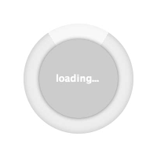

<rba-page-wrapper panel-title="*ngIf and *ngFor">
    <aside>
        *ngIf is a special directive that handles rendering its content or not
        to the DOM.  If the *ngIf is false, then then content isn't even part of 
        the DOM.  Its not the same of [disabled].
    </aside>
    <input type="checkbox" #checkBoxControl [(ngModel)]="isChecked"/>&nbsp;<label>Checking on and off to trigger *ngIf</label>
    <div class="ngif-target" *ngIf="checkBoxControl.checked">
        Adding this to the DOM.
    </div>
    <br /><br />
    <aside>
        *ngFor will repeat the current DOM element over and over for the item its on.
        The *ng is a syntax that turns the current element into the template for a special
        control.  
    </aside>

    <div>
        Get some people data from a place far, far away:
        <button (click)="getPeople()">Get People</button>
    </div>

    <div *ngIf="isLoading" class="wait-spinner-container">
        
    </div>
    <div *ngIf="people">
        <table class="table table-stripped">
            <thead>
                <tr>
                    <th>First Name</th>
                    <th>Last Name</th>
                    <th>DOB</th>
                <tr>
            </thead>
            <tbody>
                <tr *ngFor="let p of people; let isEven = even; let isOdd = odd"
                    [ngClass]="{'even-row': isEven, 'add-row': isOdd}">
                    <td>{{p.firstName}}</td>
                    <td>{{p.lastName}}</td>
                    <td>{{p.age}}</td>
                </tr>
            </tbody>
        </table>
        <br />
    </div>
    <br /><br /><br /><br /><br />

</rba-page-wrapper>